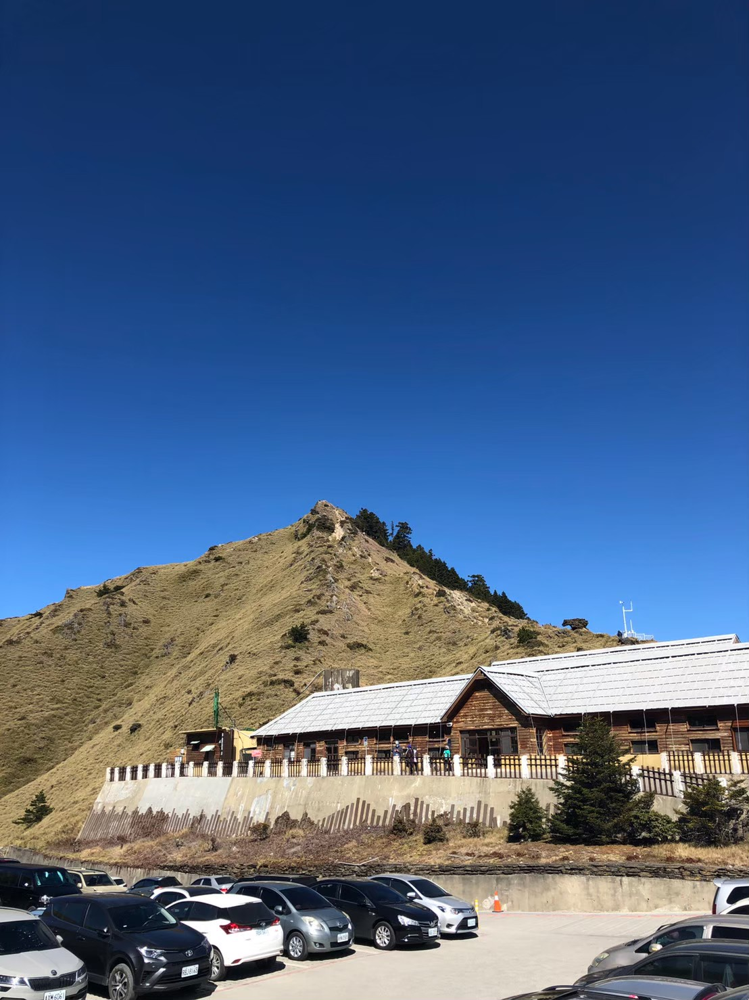
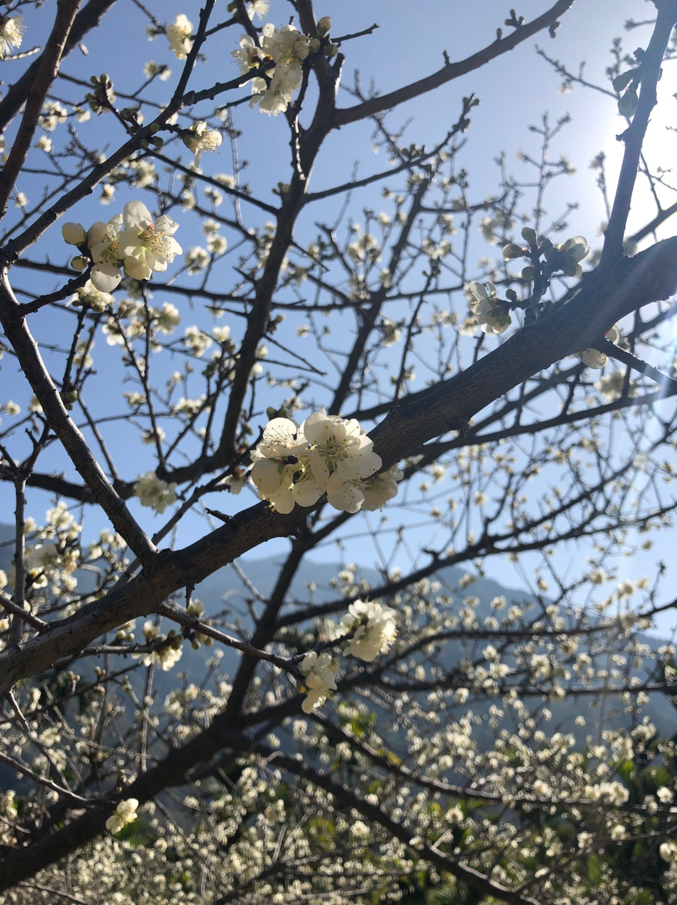
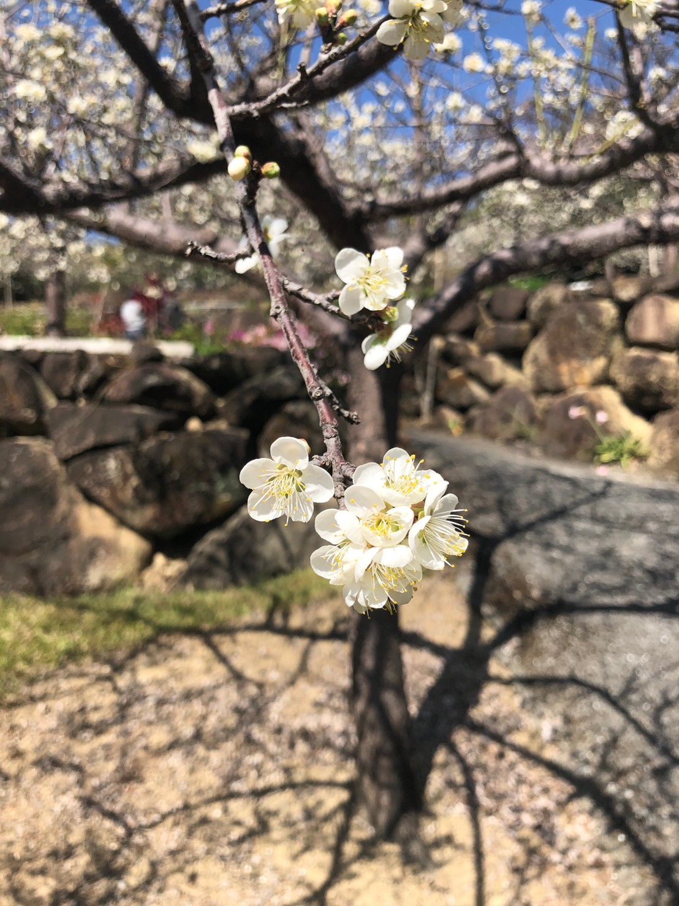
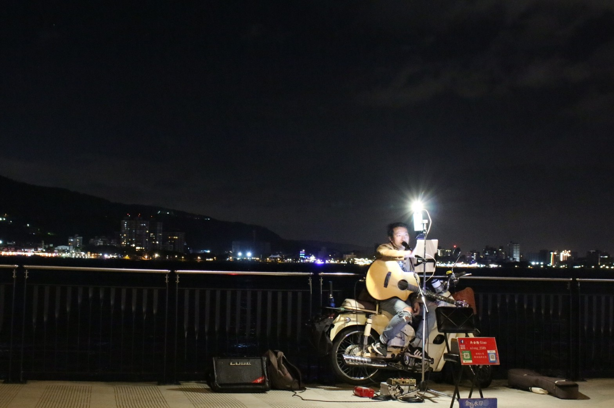

ABOUT ME
大家豪~我是賴欣妤，目前就讀圖傳系一年級
雖然我到現在設計跟攝影都還不是很厲害，但是我會加油的! 而且也開始喜歡用相機到處走走拍拍了，設計也開始會用AI了 希望之後可以活用這兩個工具賺很多很多的錢
人生宗旨:快樂的過每一天=)
上了帶學之後，認識很多人交了許多朋友，其中最相見恨晚的就是我這位隔壁班的室友-SUNNY =)
我們總是在彼此失落的時候陪伴對方，一言不合就喜歡到處亂跑亂跳沒有規劃的到處探險新世界，一起搭訕公園裡可愛的弟弟妹妹們，一起吃宵夜變胖，一起熬夜做作業隔天在一起上早八，真的很幸運可以認識泥=)
MY PHOTOES
那麼~接下來要跟各位分享我的攝影作品囉~
雖然可能不適那麼專業，但都是我喜歡的人事物噢噢噢! 還請欣賞
家庭旅遊一起去的武嶺 =)
 家裡附近的梅花園~
跟著SUNNY散散心的淡水~